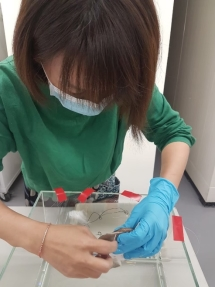

想一窺科學博物館的典藏庫、了解博物館人員準備一檔展覽的幕後工作嗎？
科教館的九樓的典藏庫房裡，有著許多的動物標本寶貝，平時此處是館內人員研究和幕後準備展覽的工作區域，此次科學節特別開放讓大家有機會可以走入典藏庫，近距離欣賞珍貴的館藏，同時透過館員們的專業導覽了解科學博物館內的幕後工作日常。

★Plus：一探博物館幕後典藏庫
903博物館幕後之旅 @9F典藏庫房
▲903 主題活動
活動名稱：一探博物館幕後
活動時間：每場20-30分
活動地點：9F 典藏庫房 (集合地點：9F西側電梯旁)
活動場次：
11月6日 10:30、11:30、16:00、17:30
11月7日 09:30、11:30、16:00、17:30
活動人數：每場10人，限16歲以上報名(請於報到時出示證件)
活動費用：每人50元
活動單位：科教館